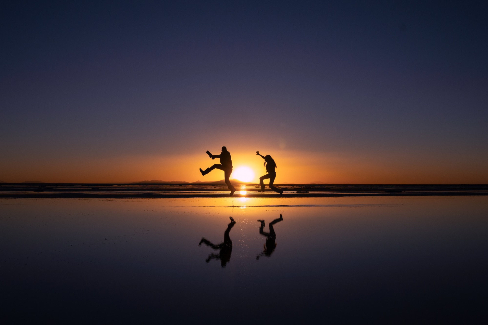

Fund a scholarship.
Help an aspiring wildlife storyteller cover the costs of developing and sharing their story.

Support the work
Help emerging storytellers make work that brings wildlife and nature to a wider audience.
What support can make possible
Help an aspiring wildlife storyteller cover the costs of developing and sharing their story.
Help provide the time, coordination and practical support that connect emerging voices with experienced creators.
Support free wildlife education resources and outreach with schools and youth organizations.
Individuals, families and foundations
We’re looking for founding supporters who want to help launch the first scholarships and give FTW a strong start. Support can go toward an agreed project or the work needed to run the program well.
We’ll discuss the scope, costs and reporting with you before making a commitment.
Talk to Sienna ↗Online giving / In development
Online donations are not available yet. To discuss supporting FTW, contact Sienna using the links above.
The preview shows a possible future giving experience. It does not accept payments or record pledges.
Choose an amount to preview a donation.